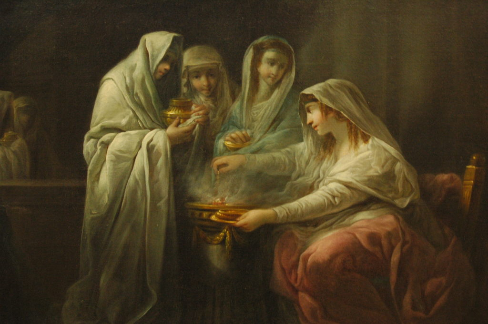
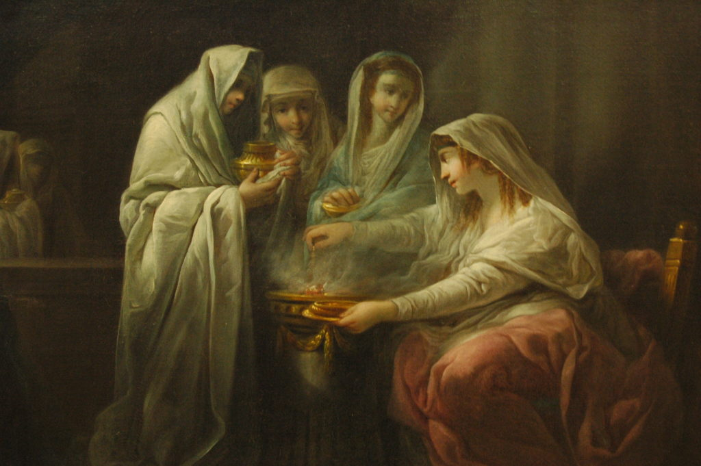
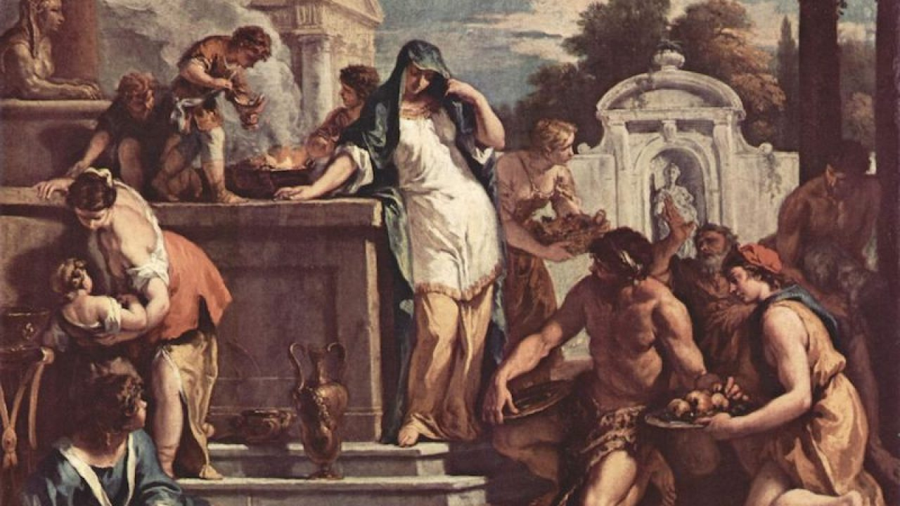
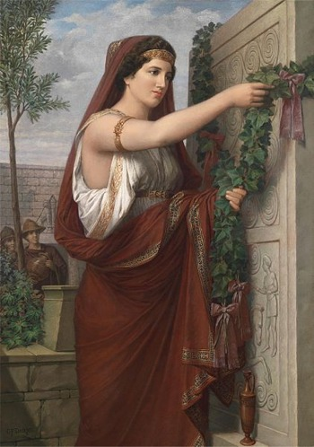

Hestia
Introducción
Hestia o Vesta era la diosa del hogar, la arquitectura, la familia y el estado. Ella era una de las tres diosas vírgenes, junto a Atenea y Artemisa . Aunque tanto Poseidón como Apolo quisieron casarse con ella, Hestia hizo un juramento a Zeus de que permanecería para siempre pura y sin mancha, nunca entrando en una unión con un hombre.Ella es una diosa de la generación olímpica, hija de Cronus y Rea y hermana de Zeus, Poseidón, Hades , Demeter y Hera . Cuando Crono se tragó a sus hijos por miedo a que uno lo destronase, Hestia fue la mayor y por eso tragó primero.
 

Nacimiento
Era la hija primogénita de los titanes Cronos y Rea, y la primera en ser devorada por su padre al nacer; por lo que fue la última expulsada del cuerpo de su padre cuando Zeus le entregó el vomitivo. Tras la guerra contra los Titanes, Poseidón y Apolo fueron a pedirle matrimonio a su mansión, pero juró sobre la cabeza de Zeus que ella permanecería siempre virgen, evitando así la primera disputa entre dioses olímpicos. El rey de los dioses le correspondió cediéndole la primera víctima de todos los sacrificios públicos y los lugares preeminentes de todas las casas. Por otra parte, un pasaje de Diodoro Sículo dice que Hestia inventó el modo de construir las casas.

Algunos mitos
Hestia y la disputa entre Poseidón y Apolo
Como podemos ver en muchos de los mitos griegos, los dioses no tenían muy claro el tabú del incesto y se unían entre ellos sin importarles
los lazos familiares. En el caso de Hestia, su hermano Poseidón y el dios Apolo querían contraer matrimonio con ella. Ambos empezaron a cortejarla y a pelear entre ellos. Hestia,
horrorizada, rechazó las pretensiones de ambos y para que no hubieran más disputas juró sobre la cabeza de su padre que jamás se casaría con nadie y conservaría su virginidad
eternamente.
Zeus la premió por su
decisión y por haber así impedido una guerra entre dioses, concediéndole el privilegio de que fuera para ella el primer sacrificio que en honor
de los dioses se hiciera tanto en lugares públicos como en los hogares.
Fundación de Roma
Cuenta el mito que el rey Amulio iba a matar a su sobrina Ilía o Rea Silvia que estaba embarazada de gemelos. Vesta intercedió por ella y le salvó la vida. Al llegar a término el embarazo nacieron Rómulo y Remo. En agradecimiento por este hecho, Numa Pompilio, el hijo de Rómulo, promovió el culto a esta diosa mediante la creación de las vestales. Éstas eran sacerdotisas vírgenes que durante 30 años se consagraban al culto de la diosa del hogar.